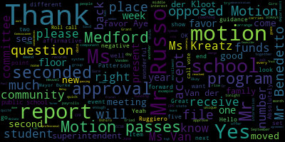
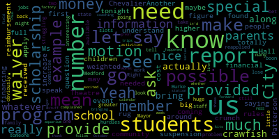
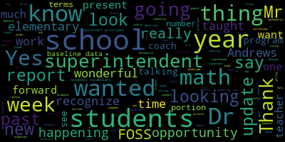
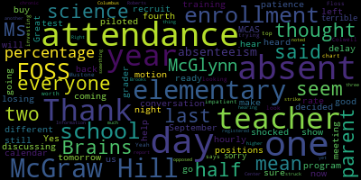

AI-generated transcript of Medford School Committee meeting October 1, 2018
English | español | português | 中国人 | kreyol ayisyen | tiếng việt | ខ្មែរ | русский | عربي | 한국인
Back to all transcripts
[Unidentified]: I actually have a book again.
[SPEAKER_07]: This is bizarre because of the light. Yeah.
[Kreatz]: Mrs. DiBenedetto. Present. Mrs. Kreatz. Here. Mrs. McDone. Here. Mrs. Van de Koop. Present. Mr. Russo. Present. Mayor Burke.
[Burke]: Present. And Mrs. Ruggiero.
[Kreatz]: Present.
[Burke]: 7 present, none absent. All please rise and salute our flag.
[Unidentified]: I pledge allegiance to the flag of the United States of America, and to the republic for which it stands, one nation, under God, indivisible, with liberty and justice for all.
[Burke]: Thank you. Item two, item one, approval of minutes of September 17, 2018. Mr. Russo. I was present. Oh. Amend the records to show that Mr. Russo was present. OK. Is there a motion on the floor for approval as amended? On the motion of Ms. Van Kloof, seconded by Mr. Benedetto. All those in favor? Aye. All those opposed? Motion passes. Approval of bills, transfer of funds. Mr. Benedetto.
[DiBenedetto]: Always help with something, right? Thank you, Ms. Patterson. On page 2 of 10, It says about a quarter of the way down. Game time, $3,771.26 for operation and maintenance of contracted building. I just didn't know what game time was.
[Patterson]: That is the Columbus tube slide replacement.
[DiBenedetto]: OK. Makes sense then. I was wondering what games we were doing. Is it installed and all set? Yes. Great. Kids are sliding. That's awesome. Thank you for your work on that.
[Burke]: Mr. Russo, have you tried it? Motion to approve. There's a motion for approval by Mr. Benedetto. Mr. Ruggiero? Sure.
[Kreatz]: I'm sorry, I have an update, because I'd rather not be the general public. The slide that's on this is one soldier. I was going to mention the treasurer's report in one week. That should be coming up very shortly. But right now, game time, who's going to do the installation? They're not doing the insulation, but the Parks Department's doing the insulation. And currently there is some trouble with the screws. It's just not lining up with the other piece of the slide. So John McLaughlin put a call in to Travis Barnes, who works at Game Time, and he's been out of town since September 17th. And so we're waiting for him to come back to town so we can come and take a look at the piece that was ordered to find out why it's not fitting up with the original piece that was there. OK.
[Patterson]: Thank you. So apologies for the clarification on that. The material had been received.
[DiBenedetto]: Thank you. Could Mr. McLaughlin let us know when that's completed?
[Burke]: Yeah.
[DiBenedetto]: Thank you.
[Burke]: Is there a motion for approval? Mr. Giro. I have a question.
[DiBenedetto]: Just a quick one.
[Burke]: Just on occasion one.
[Caldwell]: We're planning to produce a section for science instruction and science textbooks.
[Patterson]: Whatever the science department needs regarding a textbook, we try to categorize that in that particular line versus general instruction. Yes.
[Unidentified]: Yes.
[Burke]: Thank you. Is there a motion for approval? Motion for approval by Ms. Mustone, seconded by Ms. Van der Kloot. Roll call vote, please.
[Unidentified]: Yes. Mr. Benedetto? Yes. Mrs. Gretchen? Mrs. Gretchen? Yes. Mr. McNeil? Yes. Mrs. McNeil? Yes. Mayor Burke?
[Burke]: Yes. Seven in the affirmative, zero in the negative. Motion passes. Approval of payrolls. Mayor Burke.
[DiBenedetto]: Mr. Benedetto. I know last year, and I forget the dates. I'm just asking for someone to remind me. I know that we do a complete audit. And when would we get that audit, as well as how often we're going to see the actual payrolls. I know it was biannually, but I didn't remember if it was like November or if it was January.
[Burke]: The audit is in process right now. OK. So I can attest to that. Patterson?
[Patterson]: So in terms of payroll, we would be providing just an update of the new hires and any resignations and things of that sort. So that is just a listing for reference in terms of providing payroll. bi-week and bi-weekly, we did not interpret that to continue in that fashion, just because of the volume and the amount of documentation that's involved with that.
[DiBenedetto]: I thought we had agreed, like, biannually we would get a complete payroll. And just so we know, because we're voting on payroll twice a year, I think that's what we voted on during last year, last spring. That's my understanding. In January, it's fine. if that works in your schedule. Okay, certainly.
[Burke]: At end of year or... Only through December and through June.
[DiBenedetto]: Yeah, and then... Right, because we still have... I think that's what we decided on. I just wanted to make sure I had the dates correct. I couldn't remember if it was November or January that we had stated, but I know we had voted, because I think we were talking quarterly, and then we thought that was too cumbersome for your department, so we moved it to biannually. So, we'll remember and go with January.
[Patterson]: Yes, we can do that.
[DiBenedetto]: And again, you know, the end of May, early June, because the end of the year is so crazy, if that works for you.
[Patterson]: Yes, we can certainly look at that for January, just as a reminder for the committee that we still have many contracts that are not completed and approved for this fiscal year. So there continues to be adjustments as those come through. We only have the teachers and paras right now. Again, those are items that would be forthcoming and not reflective in the budget and or payroll at this point. Great.
[Burke]: OK.
[Patterson]: Thank you.
[Burke]: Thank you. Is there a motion for approval of the payrolls by Mr. Russo, seconded by Ms. Kreatz? Roll call vote, please. Mr. Russo? Yes. Ms. Kreatz? Yes. Mr. Russo? Yes. Ms. Kreatz? Yes. Mr. Russo? Yes.
[Unidentified]: Ms. Kreatz?
[Burke]: Yes.
[Unidentified]: Mr. Russo? Yes.
[Burke]: 7 in the affirmative, 0 in the negative. Motion passes. Report of Secretary, Ms. Kritz.
[Unidentified]: Yes, I have a report I'm writing now.
[Kreatz]: I'm going to hand it out to everybody, and I'm just going to have to read somebody's original report. My report ties into the report that Jonathan read from first reading, so I'm going to read that one. So over the summer, I had made a promise last whole year, at the end of the year, to go out to every elementary school in the Valley of Indianapolis diagram and do a full report. And that's exactly what I did over the summer. I walked around the playgrounds and we put all this together about what we need to be done with the playgrounds. What everybody mentioned, and I mentioned that to the parents is that playground service is definitely part of the capital repair. But it's just something that I wanted to mention here that we need to think about for future budgets for the other elementary schools, except for the public schools. So, on July 2nd, I met with the principal, and at their school, the next year he founds a very good, the landscaper's on contract, so the slugs in the community are very well-fed. On July 5th, I met with someone who treated two parents of all their slugs in the shelter system. Some of the things we talked about are replacing the broken section of the tube slide, feeding the puff squash, more squids, freeing both worms, adding mulch, etc. the other piece that was delivered, which was talked about on the slide. It was delivered on September 11th. It's currently sitting in the playground outlet of Columbus Elementary. However, there is a problem with it connecting to the other original piece. So John will often text me, contact me back and forth and relay more information to the audience that we're still reading. Once we have enough data, I'll update everybody. On July 9th, we had the P.T. Parrot Show at Rodriguez. We had a similar discussion about I want to give a shout out to Mr. Potters, the music teacher. He volunteers his time and takes care of the garden, the flowers, the flowers, the bushes. It just looks beautiful. And it's so very pretty in the summer. You can imagine in July. On July 16th, I met with the two parents and a friend named Karen Turney. Some of the things they discussed was a gorgeous live session in one of their pre-K playground area, adding sand blocks, freshly cut signs, and landscaping and mulching. What I do is I run some pictures in a few clubs. I look at before and afters. They're very nice to look at and see the dramatic differences. I want to make John Gawthorne, I want to make Deanna Depney, Christine Patterson, Angel Guino, Juan Russo, Michelle Sesol, Michelle Rodriguez, Jenna Graham, Kara Church, Dr. Edouard-Vincent, Iria Burke, Leo Walter, Another thing I wanted to do was, I wanted to just kind of build a kind of follow-up. I've been giving this stuff to the principals and I just wanted to go in and volunteer and be a vote to the volunteer partners. So I began doing that and I kind of made it up to the schools and then continued to schedule some of the kids. Also, I wanted to just mention that I was at the American High School of Higher Information last week. It was a great turnout. While I was there, I stopped in to see my recent teachers of the high school in the location design. I wanted to share a very nice project that the students are working on in plasmatology. One of the teachers was there, and she, Lauren Skierada, and she showed me one of the projects they're working on. It's called the Airbook project. The students can pick any of them, choose a picture to recreate the style of the past on the practice desk. And it just came out wonderful, and it's something that the students really like doing, and it's just a lot of fun. And another thing I wanted to mention was if you're ever interested in having your hair or nails done, please, you know, feel free to contact Mr. Graves for an appointment. They can get you to an appointment at 781-393-2139 at any time. The kids really like working on customers. So if you ever, you know, want to get your hair done, you know, feel free to reach out. And I have my team from the VTO teaching organization online forum. We've been emailing Molly Lattin, Allison Roseberry, Jenny Graham, Paul Roseau, and Dr. Maurice. So right now, what we know, the forum can be added to the website very easily. Currently, you still need to transfer the membership from Jenny Graham to a point person at public schools. So we're still working on that. I think Karen mentioned that last week. And still no new update yet, but we're still working on it. So as soon as we have another update, I'll let you know. And last week, I did hand out an ALF scholarship application for the fifth, sixth, seventh, and eighth graders. I handed out a form to all schools, but one is left to be deteriorated to one of the schools. And I did have a question being, do we need to approve that at the school committee? Thank you.
[Burke]: Thank you, Ms. Kreatz. Is there a motion to receive and place this report on file by Mr. Russo, seconded by Ms. Vandeclude? All those in favor? All those opposed? Motion granted. Report of committees? None? Mr. Ruggiero?
[Ruggiero]: But first, suspension of the rules. I know we have a number of big reports coming tonight, and a member of the community would like to speak on an event at the Chevalier Theatre.
[Burke]: We'd like to invite Ken Krause up to the podium to speak on an important event that's transpiring next week.
[NqJnNNyD4Uw_SPEAKER_14]: Thank you very much, Ken Kraus, 50 Mystic Street, Medford, and also representing the Friends of Chevalier Auditorium. I'm a member of the board of directors. I just wanted to let the committee know about an event that's coming up, and also the public, anybody who might be watching that cares about Medford education. And it's a talk by Bill Cummings, who is the founder of Cummings Properties and the Cummings Foundation. It's going to take place at Chevalier Theater on Wednesday, October 10th at 7 o'clock. For those of you who may not know, Mr. Cummings is one of the most successful commercial real estate business people in the country and also one of the top philanthropists in the country. And he's very proud of pointing out that his entire formal education took place in Medford. He grew up in Medford and attended the Curtis School and Swan School for Elementary School, Roberts Junior High School, and Medford High School, graduating in 1954, and ultimately went to Tufts University, graduated in 1958. His story now is part of a book that he's written, and it's called Starting Small and Making It Big, An Entrepreneur's Journey to a Billion-Dollar Philanthropist. The purpose of the talk is to dovetail with a program this fall called Arts Across Medford, and the theme of Arts Across Medford is roots. And conveniently enough, Bill is going to talk a lot about his Medford roots, growing up in Medford in a modest working class home, going through the Medford schools, and what you can aspire to and what you can become when you apply yourself. Interestingly, if you look in the yearbook, Bill was not one of the superstar students in his class. He wasn't the valedictorian, he wasn't voted most likely to succeed or most ambitious or industrious or anything like that. He was a member of the Projector Club, he was a member of the Science Club, and he was a member of the French Club. But I think if he had an opportunity, he would have been a member of the Center for Citizenship and Social Responsibility, which, by the way, is a program through his Cummings Foundation that he gave $100,000 last year to keep that program going. I think that just kind of exemplifies the type of person he is. is a great example for people currently in the schools to look up to and hear him talk about his story of growing up in Medford and becoming what he's become. And now he's taken the giving pledge. So as a billionaire with Bill Gates and Warren Buffett, he's giving away all of his money. And as I mentioned, he's given money to the CCR. We at the Friends of Chevalier have been a recipient of two grants, specifically for the Medford Boys and Girls Club, which is in the lower level of the Chevalier Theater Complex. In 2014, he gave a $100,000 grant to allow the club to hire an education coordinator, and that person has been able to strengthen the relationship between the club and the school so they can continue helping students with homework and things like that after school directly related to their studies. grant that was awarded this year is a 10-year grant for the club to establish a literacy program. One of the areas that they felt there was a strong need for was to have more opportunities to focus on literacy at the club, more reading materials, more reading programs. So that just launched this fall. So I could talk about the guy all night. Thank you for letting me talk as long as I have. But I just hope anybody who sees Bill as a great example of what people in our schools can aspire to. And what our schools can help people achieve. We'll take the time to come to the event on Wednesday, October 10th at Chevalier Theatre. It's free. General admissions just come. And I think you'll be inspired to hear Bill talk. And he's actually the moderator for the night. He's going to be former mayor and school committee chairman Michael McGlynn. So they'll be talking about all the good things about Medford and the school. So thank you for letting me share that information.
[Burke]: Thank you very much, Ken. And also, I think you would be proud at the CCSR meeting this afternoon, they were handing out flyers for Mr. Cummings' event. And he has been a very giving man to this community. So hopefully people will go out and go to the event and listen to his story, which is quite fascinating. Thank you. Item 1, report on new MCAS accountability system.
[Edouard-Vincent]: So I wanted to just make a few comments just about things that were happening in Medford as well this week, or the past two weeks I should say. So I just wanted to inform the school community that I had the opportunity of conducting four math learning walks at all of our elementary schools. The walks consisted of 10 to 12 people participating. And I wanted to recognize all of those who supported us in gathering baseline data. Ellie O'Leary and Grace Vasili, who are our new math coaches, elementary math coaches. Fiza Khan, who's our math coordinator. Dr. Bernadette Riccadeli, our director of curriculum. Diane Caldwell, our associate superintendent. Lisa Evangelista, who's our public relations representative, who was also documenting our work. We had principals Suzanne Galussi, her assistant principal, Shannon Demos, principal Kathy Kaye at the Columbus, Kirk Johnson at the Roberts with his assistant principal, Andy O'Brien, Diane Garino at the McGlynn Elementary, and Doreen Andrews, her assistant principal. Our Lesley partners who also participated were Dr. Patricia Cren de Galarse, Sue Cusack and Christina Jash, and myself. It was a wonderful time of learning and observing and gathering baseline data, mathematics data, and specifically we were looking at core actions. We observed approximately 48 classrooms, and the things that we were looking for were evidence-based responses in mathematics, productive struggle, students being challenged, evidence of academic discourse, that students were using appropriate academic vocabulary and not saying things such as the thingy, but using the actual academic vocabulary of the course that was being taught. Access for all, what kind of accommodations or enhancements were being used, whether it was technology for all learners, and feedback, were students being given feedback during these instructional lessons that we were observing. So at our next school committee, I will present a more kind of robust report on the actual findings, but I wanted to just recognize that those were some of the things that were happening since we last met over the past two weeks. I also just wanted to update the community that last week we did have an isolated medical incident that occurred at the high school and that, yes, Mayor Burke and the whole school committee was notified and that all official protocols were followed. I also would like to report on our middle school. We had the opportunity to begin getting baseline data at both the McGlynn and the Andrews. and looking at practices and getting ready to go deeply and look at instruction. I did have the opportunity to spend some time at the Andrews. I was in a math classroom, Ms. Forty and Mr., where am I going right now, social studies class. Mr. DeWaldi. Yes, Mr. DeWaldi. Science. About protons and neutrons and electrons. And it was just wonderful to hear the academic vocabulary and the work was really cognitively demanding. And I asked the students, you know, in the math class, was it difficult? Was it hard? And they raised their hands feeling like, you know, they were understanding what was being taught, and the teacher was able to say, you know, after one day, they were remembering what they had taught in the past. So it was just very, very encouraging, and I look forward to doing much more of that. I also had the pleasure of attending a breakfast in Lowell with our DA, Marion Ryan, where she invited school superintendents, fire chiefs, and police chiefs for all of Middlesex County, and we met, and she really talked about the opioid crisis and how it is affecting our communities and how we can work together to educate all our constituents. So that was very informative. And lastly, I'd just like to recognize our media tech students at the vocational school. They scheduled an interview with me. They interviewed me at the media center. And the students not only conducted the interview, but they also were handling the cameras and the teleprompters behind the scenes. So it was really a coordinated event. And if you want additional information or look at that video of that, you can find it on our blog. For those of you who are interested, mpsadvantage.education. But I'm really excited and I want to continue to just share the bright things that are happening in Medford Public Schools. Wonderful, thank you so much. You're welcome for that. And without much further ado, I want to thank Dr. Bernadette Riccadeli, our Director of Curriculum, and our Headmaster, Paul DeLeva, who are going to share the updates on our new accountability system from the state, talking about the changes and what it means, what what does our MCAS data look like and what does it mean? So please. Thank you.
[Ricciardelli]: So good evening, Superintendent Edouard-Vincent, Mayor Burke, and members of the Medford School Committee. So tonight, Mr. DeLeva and I are going to provide you with an overview of the new accountability system. It is different from the old system. I think it's fairly complex and it's in its nature. So we're going to go through. In your packets, you have information. There is the PowerPoint slide that we're going to go through. There's also, I think, maybe a nine-page packet that accompanies it. So without further ado, we're going to proceed through it. I hope that you can see this. Is there way to dim the lights? Might make it a little bit easier to see.
[D'Alleva]: This is really good. It's better than when I'm teaching my students.
[Ricciardelli]: All right. So I just want you to know that this PowerPoint is lengthy, as I mentioned. We're going to go through it quickly, balancing, giving you the information with not taking too much time to go through it. All right. So let's start with the system highlights. So this system is meant to give the population, the citizens, the students, the schools, a lot of information beyond what the old accountability system offered. So it measures much more than test scores. It goes into student opportunities as well. It's both normative and criterion referenced in its nature. So for those of you that are not sure what those mean at home and here, it measures test results against different populations, different populations of students in different schools within the state. But it also measures students' achievement against set targets and set criteria. It focuses on raising the performance of raising the lowest student performance. So as you'll see a little bit later, the performance of the whole school is balanced with the students of the lowest group. You're going to see a 50-50 split there. That's important. There is a discontinuation of the old accountability rating system or assistance levels of 1 through 5. So you're not going to see numbers with this new system. But rather, this system really looks at categories which measure a school's progress in offering student support in what they need. All right, so moving on to the timeline and the process. So we can go back to December of 2015 when the federal government passed the ESSA, the Every Student Succeeds Act. So it's been almost three years since that act was enacted. And since that time, the state government, all 50 states, had to provide the federal government with a plan for how they're own state would be consistent with the goals set forth in the federal plan. So let's fast forward to June of 2018 after feedback from stakeholders was attained and the state came up with a plan. The Board of Education in late June approved it. Here we are in September 2018, actually October 2018, And we have our accountability ratings. So again, it's been a long process, but our system is kind of a mesh between what the federal government wanted and how the state adapted to it and really, I think, strengthened it. So the required accountability indicators. So what we're going to see is that there are a lot of different indicators embedded in this system, more so than what we had under the previous system. So the federal ESSA, I'm going to call it, Every Student Succeeds Act, requires that achievement is based on the annual assessments, our MCAS, and English language arts, math, and science. It's a measure of student growth or progress for the elementary and the middle schools. It includes graduation rates for high schools, progress in achieving English proficiency for our EL learners, and at least one measure of school quality or student success. So as the federal government presented it, these were the baseline things that they wanted to see. So Massachusetts took ESSA. and added more to it, which we're going to see.
[D'Alleva]: So just to go over some of the indicators that were identified by the state. Achievement being one of them, that's something that we've always had in place originally. We'll talk a little bit about how they're weighed out. Student growth was also part of an original indicator. What is new is English language proficiency was not something that was considered in accountability, but now the state would like to see our progress made with language proficiency. We do this by our access scores, so before our access scores were never really considered for accountability, they are now. As well as this wonderful chronic absenteeism, which has, and again, this is for grades elementary through middle school, by the way, The chronic absenteeism is students missing 10% or more of their days in membership, and that's key. Membership of when they start. But they also said if you're within a month, let's say you come in in June, and the student doesn't show up any of those days, the state's not gonna count that against us because the membership hasn't been that great. But if a student starts midway through the year, it's 10% of when they start from when the school year ends. That being said, if you look at the high school, we have a little bit more indicators than we had before. Again, same with English language arts and finding growth. This has always been in here, the cohort rate of graduation, as well as the annual dropout rate. But once again, English proficiency is now part of it. Also chronic absenteeism, but this is also something new and that is talking about advanced placement coursework. Basically the comparison is the amount of students that are enrolled in advanced placement compared to the amount of students succeeding in advanced placement. So these are all new indicators that are now part there. So one thing that I have to kind of stress, I know we talked about it last year, When we were going over MCAS data, it's important that we talk a little bit about it this year. This is the first year now where we have two points. Last year, from elementary to middle school, we had our first baseline point. Now we have our second point. So now we're comparing 2017 to 2018. We didn't have that before because we did multiple different assessments. I can go into about one year we did PARCC. One year we tried the next generation MCAS. Now we're finally streamlining to get more data. So one thing I'd like everybody to think of is now is where we're following everything. We can't go back to, and it's in the previous slide, but we can't go back to maybe five or six years ago, because now we're going to compare different fruits, basically. They're all fruits, but watermelon to oranges. Now we have oranges to oranges.
[Burke]: Do you repeat?
[D'Alleva]: So 2017 was our baseline data.
[Burke]: Which was a different test. Well, it had different components.
[D'Alleva]: Different components, but they set us, they set criteria. The state determined criteria for us. So we were getting things in the summer, basically, looking to see how did we determine your chronic absenteeism targets? How did we determine your achievement targets? All that stuff. Every school has a different set of achievement targets. So nothing is static in the same. So let's go back to the Andrews, because that's where I previously was. Basically, with the data that was presented to them, the state decided, OK, your target is to get to this number here. And then a different school will have a different number to get to. So it comes down to that norm reference as well. So basically, again, using average scaled scores on the next generation MCAS. One thing that we have to say, it's important that our data is updated as best as it possibly can be. One thing that we noted that chronic absenteeism is something that's new and that's hit us before. So from a high school perspective, you have to weigh out the chronic absenteeism versus the dropout rate in some cases, because you could get hit with both. But if you don't have your data organized by that October 1st deadline, let's say there's a student that's unenrolled that we missed, we own that student all the way through. So it could be affecting us through. So one thing we've been trying to do is definitely try to clean up the data as much as we possibly can. And then if you see this SCS, the students that are coded into AP classes that they're noted that they're part of that cohort. So this is the weights. Like a big pie, right? We're in fall, let's talk about apple pies. I love apple pies, okay? It's fall time. The pie is 100% on both sides, correct? So therefore we have one big piece of pie, one big pie on one side and the other side, which is different now which wasn't there before, is this English language proficiency. If you have English language learners enrolled in your school, then 60, 20, 10, 10, you get to 100. If you don't have English language learners enrolled in your school, you're now at 67.5, 22.5, 10. Both equal 100, but the key is now the achievement percentage is greater now for that school that does not have an L in their school. OK, so let's go back a couple years. People would always say, well, the Andrews never had any L's, so that affected the accountability. So the state has now said, OK, there's definitely districts out there or schools out there that don't have L's. So basically what they're saying is, we're going to weight your achievement higher so that you equal 100% as if you did. Yes, sir. So I have two questions. One, the first is about accountability, isn't it?
[Ruggiero]: So how is this weighted?
[D'Alleva]: So same deal of what I said with the achievement. They gave us a chronic asthma team number to hit. So they looked at your attendance in 2017. this number you want to go lower, you don't want this number to go higher. So they looked at that number, basically, and they said, okay, this is the target you need to hit, that lower number, and not show growth. So how do you re-engage students that are constantly absent? What are we doing as schools? Right. Yes, so I'm glad you brought that up because I didn't mention it initially. Growth has now changed. We used to take the median number of the cohort that they were in. I never understood that for years. Never made sense to me, but there are people above my pay grade that do that. So basically, I never understood why we did that. But I think now the state has realized, no, we need to take the average. So now it's the mean of the cohort. So now we're using the mean value for that, which in a group.
[SPEAKER_09]: They don't.
[D'Alleva]: An absence is still considered an absence, whether it's excused, medical, they have not determined how that is going to work. So they're counting that number. I guess that's where I agree with you that we should be focusing on certain scenarios that are affecting students. They're asking us to kind of figure out how do we re-engage. So for example, when a student is on home instruction, That student is technically present, but we have to code it correctly to make sure that they're marked under home instruction so that they're getting the present marking, even though they're taken out. Remember, home instruction, this is medical-based instruction that's going to average more than 14 days within the school. It's more on us to make sure that our data is coded correctly in some cases. In some cases, we have students that are out on extended medical, but that doesn't factor in. They still say that that's considered an absence.
[SPEAKER_09]: If a student fails to graduate on time for that same reason, so perhaps they're having some crisis
[D'Alleva]: Not exactly, but what I would suggest with that, you know, we gather a team together and we start looking exactly what we can do to support that student academically. I think one thing that I do like about chronic absenteeism is that when it came out, We were able to filter out and say, OK, these are our top students. Let's come up with a plan of how we're going to re-engage them. How are we going to get them back in? How are we going to make sure that they're getting their academic stuff done? It's a new target that never existed before. So it kind of hit some of us pretty hard on our accountability that we weren't quite sure of how it was going to go.
[Burke]: Mr. Benedetto.
[Unidentified]: Even if it really is impossible, the school doesn't think it's going to be successful. It's never going to do what that initial student says they're going to do, right?
[D'Alleva]: I thought it was a good thing for us to identify right off the get-go when we saw that it was an issue at the high school, for example. It was something that we all met, my building leadership team, we sat down and we started analyzing. The students, you know, what are we going to do when they hit five? You know, it's not just, okay, they get an automated phone call. They actually need a personalized phone call to find out what's going on and try to, you know, be on top of it. I think that's the goal for us this year is to be on top of it and see where things are, you know, where people are struggling and all that, you know. that were judged on the dropout stuff as well as the chronic absenteeism because it is a double-edged sword. And sometimes some students unfortunately feel like the best laid out plans aren't working for them. But that doesn't mean that we can't get creative and try to figure some things out. And that's something I want to keep focusing on this year as we go through the year. Sorry, we don't want this to be very long for you. It's not our goal tonight. So just to see that the high school weights too are different, and because obviously they have more indicators that are there, so their achievement is more at 40%. So that's something to consider when you're also looking at MCAS scores. You're looking at achievement based on 60% from three through eight. but you're looking at achievement being at 40% through the high school. But again, the high school has more things that they have to complete on their indicators. I do like this indicator a lot when it was explained to me. I think having students, and I think if you look at our accountability data based on what was there, having students that were participating in AP courses and doing very well in AP courses was something that we did very well in. So that's something to take back as a note to get that 10%. Wow, this is a lot. So I'm going to try to see if I can go through some stuff so you don't get stuck here. So all right, based on points, these are things that basically weigh in on how things are set up. So for example, if you hit exceeded target, you get a four, met three exactly all the way down. That being said, if you look here at a middle school or an elementary school, so for example, if they get a three and you get a total points of here, as you go down and you take your average, you get 63.5. Remember, right down the middle, now they're looking at the lowest performing students. So again, the state is tracking more kids than they've ever tracked before. All the data that we put into school brains is being translated out through the state. So therefore, they're selecting our lowest performing based on some criteria that's there, which is probably achievement as well as growth, possibly chronic absenteeism. And they're saying, OK, there's your lowest performance forms. We want to see you get, oh, no. Wait, I did it. I got it. I would have ruined the whole thing. So basically, they're comparing the two percentage to come to a general percentage here. Yeah?
[SPEAKER_10]: Are they compared to the lowest performing students? No. No. Half. Half. So they're just looking at the upper... They're looking at all students.
[D'Alleva]: Nope. They're comparing all students to their lowest performing students. Of the two values that are here to come up with a criterion target percentile. No, don't peek.
[Edouard-Vincent]: Yes, the answer to your question is yes. All students is everyone including... Right, oh, I see what you're saying, yeah. All students count for 50% of the score. And then the students that are our lowest performance are counted a second time, and they are 50.
[Unidentified]: Yes. Yes.
[Ricciardelli]: Sorry, I got overzealous and took over some of Bernadette's slides. We've spent a lot of time talking about this and going over it and watching videos. And each time it's becoming more clear to us. But I think it's fairly complicated. All right. So we went to the high school. We just got out of order a little bit. Can we go back to? Let's see. Comparisons. All right. This is going back to the norm referencing. We kind of jumped ahead to the criterion. Back to the norm reference. So how are the different schools going to be measured against each other? Because this past year there were some schools doing the legacy MCAS and some doing the next generation MCAS, the Department of Ed has had to put schools into different different cohorts. Thank you. So this year they're separated by grade level, type of school, the type of test. It will be much easier next year to do the norm referencing on this. This year was a little bit difficult. Again, this is new, so we're in uncharted territory. Moving on, I think Paul went over the criterion reference component and the measures on a zero to four scale, and then he was going into the charts. You didn't do the high school chart. All right, so the high school chart is similar to the non-high school chart that came before. So again, what you see here is the advanced coursework completion. So if you look under high school completion total and then EL progress below chronic absenteeism, you're going to see that high schools are being given credit for advanced coursework completion. So they're going to look at the students who are enrolled in AP classes, IB classes, we don't have IB classes, or any other advanced course that the Department of Education deems advanced, which could be some honors classes. They haven't been specific with that. So we will get credit for that. And again, they're going to get this information not by us submitting a list of who's taking courses, but by them going right into the system through our SIF, our interoperability framework, and getting that information from our student information management system. and it gets put up right to the Department of Vet. So they have access to every single course that every single student is taking. The four year graduation cohort rate is also added for the high school criterion reference calculation. So as I understand it, in years past, districts were, schools were penalized for a five-year graduation rate. So my understanding is that it's no longer a penalty. It's just an acknowledgment that some students will have an extended engagement rate. So I think that is a good thing, because in the past, we were, districts were penalized for going beyond the four-year graduation rate.
[D'Alleva]: Just to continue on what she's saying here, if you look at the weight, so if each one comes out to 100 over here, on the lowest performing, there was no EL student at this point, so their weight was different. But it still equals out to 100%.
[Burke]: So this is just an example? Yes, this is an example just so you put together. To try and help us understand it.
[SPEAKER_10]: Yeah.
[Burke]: Okay, I'm just curious about that.
[SPEAKER_10]: Are we counting the lowest performing students that take these classes? Because that seems...
[D'Alleva]: They're part of the, it's part of the indicator. But see, they're not, but if you look here, they're not, they're not recognizing there, so. So the understanding is, and the way I understand the lowest performing is, we want to get less students in the lower performance category and move them into the, no, you're not going to get everyone, but the state is trying to say, don't forget about these guys, basically.
[Ruggiero]: I totally understand what you're saying.
[D'Alleva]: Exactly. Right.
[Burke]: To me I always thought it was a certain number of apples inside Yeah, it's it's weighted as 50% of
[D'Alleva]: but it's not 50% of the class. I mean, I honestly, like I looked at my list, there's like a quarter. It's not half the grade. It's not half the grade. No, it's being weighted half. Okay. I want to, it's being weighted half. It's not half the grade. It's being weighted half. So third, let's say it's 30 kids. those 30 kids that are in the lowest performing are being weighted half against all still students. Right. Right. Yeah. Yeah. No, I understand. It's new for all of us. So each school has a different amount of apples. So, I mean, I can't tell you what, whose apples are what. You know, some have Cortland, some have Macintosh, and they might have more Macintosh than Cortland, but... Very good. I'm trying, I'm trying. Ms. Van der Kloot. So, on the places where kids are encouraged to do EBS work, either that has a fixed placement, either in the back of the bar or in the back of the parade, are we all welcome to that meeting?
[Ricciardelli]: Typically the school system will go with either advanced placement or the IB. Usually they don't go with both. Many of the charter schools, not all, but many do IB. No, not necessarily. Not necessarily. I mean, I think the Advanced Placement Program is a solid program. I think where we need to look are those honors classes that we feel are rigorous and find out what the criteria is for the Department of Ed to count them as the rigorous advanced courses.
[SPEAKER_09]: And don't they determine a kid's success on scoring?
[Ricciardelli]: So this says completion. It's an area for me to look into more. It doesn't say a certain level of, you know, if they got a 3, 4, or 5 on the AP test. So I think that's a great question. Right now it says completion. I'll follow up to find out does that require any pass, I assume, would be a completion. But I'll follow up with that.
[D'Alleva]: And I don't want to go through it, but again, the weighted total of that is 10%. So it is, even though it's an important percentage, it is a small percentage on our whole calendar.
[SPEAKER_09]: No, no worries.
[D'Alleva]: Each school receives, as a matter of fact, they're making the new list now. So we got lists over the summer as schools, as principals. So we're already identifying students that are on the lowest performing end and we're trying to come up with plans, you know, to ensure success. So again, for me as a principal, what I like about it is instead of me disseminating the data to figure that out, the state's doing it for me. So now I can look at what the state is giving me and say, OK, these are the kids we've got to target, we've got to figure out what we need to do to make them in showing achievement and growth and everything of that nature. And each school then got their own. So I can only see what's at the high school right now. And again, my accountability shifted when I became headmaster, so I'm still sort of deciphering it, being in a new school. So then I'll bring up response and intervention again. It's one of the key things that I think where you are trying to find what every student needs. So where I look at students that may be on our low performing stuff, I think that if we do our interventions and do what we normally do, we can re-grasp those kids while instruction is still going on throughout the day. So that you're not losing that because I think you know, part of differentiated learning is that you're getting your high guys excited and you're finding the gap to meet the modem so everybody gets what they need. Good? All right. So, talking about categories... Thank you. I knew you were going to do that for me. I appreciate it. Thank you. Oh, I knew that was going to happen, too, because I was doing that fast.
[Ricciardelli]: I'm all set. Thank you.
[D'Alleva]: Sorry. All right. So as we said before, you used to be used to seeing level one, level two. We all strive to be level one. We were happy when we were level two. We were scared when we were level three, because we knew the state was going to start intervening a little bit. So one thing to note is that basically 90% of our schools could be categorized based on their own performance against the targets that were given to us. Most schools will have 50% or higher. And if you looked at our accountability reports, which are public now, we are in that range. So they also want to commend students for being schools of recognition. So if you look here, this is where we fall right now. which again is 85% of all schools in the state of Massachusetts.
[Ricciardelli]: So we're in the partially, so as a district, we're in the partially meeting targets. Right.
[D'Alleva]: And so if you look here, this note is very important, because in 2018, these were performance against two categories, but in 2019, we're going to have more data, right? So therefore, they'll have it against three as well. Under this system, schools are categorized and districts are categorized.
[Ricciardelli]: So those schools that previously were in levels four and five, which is not Medford, but just so you know, the commissioner is going to be putting them in the either underperforming or chronically underperforming categories. So we hope we're not even going to go anywhere near that place. Schools ending in grade three will only be classified on their criterion reference component only, because there is no Well, there's no growth component to that because there's no test prior to grade 3. Schools with no tested grades will be classified as having insufficient data, and schools with low assessment participation, that's below 95 percent, will be classified as needing focused or targeted support. So that's a very serious thing. We do not want to get anywhere near 95% or below 95% because that puts us in a completely different category. So we aren't of that. All right. So yes.
[SPEAKER_10]: So, you know, from the perspective of parents and their mother too, they can get passed, which is magnified, I think. And I think it's a really well-planned state. The conversation came up about this, and, you know, if you get into this category, which unfortunately there wasn't any in this category, it was stated and very clear that what it means to be in this category is not what you're studying. in this kind of state of the margin for school. They're doing great, which are 92%.
[SPEAKER_07]: They're not resources here to pay for the school.
[Ricciardelli]: So if a school is below 95%, they're going to be classified as needing focused, targeted support. So can we go back a slide to the chart, the categorization of schools? So if you look over on the right-hand side, where it says focused, targeted support, that's 15%. That's a low 15%. It's not a good place to be.
[SPEAKER_10]: But in the old system, once you got
[Ricciardelli]: Yes. So I think that the change is that this is less punitive. It is more support-oriented. And that was, I mean, that came all the way from ESSA, all the way down to the state. That's the approach that they wanted to take. Less punitive in nature. So that is in sync with what you're saying.
[D'Alleva]: And I think the other reason why participation became a focus was because, again, we did park, we did next generation. There was nothing for us to compare for achievement. There was nothing for us to compare to growth because, again, there were different fruits going through, and then finally we decided, okay, now we finally have the same kind of fruits. Now we can look at things differently. So I think when they're saying they're weighing more on the participation, I think that was mostly for this year because they had nothing else. If you even look at our accountability from last year, it says participation, no status. So it's something to be considered. Let's talk about the districts. I know we've kept you longer than you probably want to listen to us. So we'll try to keep moving along as best we can. So the one thing that we now need to think about with districts is it is no longer what used to happen was if one school went into level three, then we all were in level three. It is now, think of the district as one big school. So it takes all the ratings that we have and it comes out with its own rating on its own. So there's no more, Well, you're not making it, so the whole district is not making it. That I liked. I thought that was a good idea. So from now on, the whole district has its own percentage for everybody that's throughout the year. So they're just focusing on students from every grade level. So again, the districts fall into the meeting targets and the parcel of meeting targets. If you look before, I'm going to go back a couple of slides. This was something that's not in there for the district. They are identifying individual schools more. So this is really a school-focused accountability. I guess that's what I want to kind of drive home here. So you can have schools of recognition. Of course, again, we all strive to get there. Is that you or me?
[Ricciardelli]: That was you.
[D'Alleva]: That's me. Sorry. I'm losing track of where we are. So with some of the data that has come out, noticing that 74% are designated of not requiring assistance or intervention, 14% is requiring assistance or intervention, and 12% basically insufficient data. And the numbers just change when it comes to districts. So it's just comparing accountability classification versus district accountability.
[Ricciardelli]: All right, and this one, the accountability categories for schools. So within the state, 31 are categorized as meeting targets. So within Medford, the Brooks Elementary School fits in that category. 53% are categorized as partially meeting targets. So that would be the district and all other schools in Medford. We did not have any schools in either of the two other categories. Statewide, 51 schools received a school of recognition label for high achievement, high growth, or exceeding targets. Going on to the next slide here, it talks a little bit about the schools who needed more comprehensive support. Again, we're not in that category. I'm going quickly here because it doesn't apply to us. Moving on to the next slide,
[D'Alleva]: I never looked at it that way.
[SPEAKER_10]: I don't know.
[D'Alleva]: I usually did it by district to be honest with you. I will tell you that the number varies though with the If there's a charter school that's counted in as well as, I mean, just look at what we did with the merger. Now it's all one schools. A little bit more, I would say. I would think, but yeah. I'm sure we can figure it out.
[Ricciardelli]: Well, I guess what, 131 schools were among the lowest 10%, so that would give you some idea of the 13 years. Can I really look it up then?
[D'Alleva]: Yeah. Yeah. You got zero over and you're good.
[Ricciardelli]: So maybe that is it. Okay, so let's see, I forget what we were here. We went over that. Target percentage slide here. All right, so we can... The categories, some districts declined, some in which there were no change, some improved, some met target, some exceeded target. There are points that correspond with each one of those categories. And then you have the target percentage. 68% of schools received a target percentage of 50 or higher, indicating that the school is improving. So 50 is kind of the number that you want to show improvement. So let me just give you the numbers for what we have for Medford. The district overall was 56%. So again, 50 or higher is indicating that the school is improving. The Brooks was 81%. The Columbus, 62%. The McGlynn Elementary, 62%. The McGlynn Middle, 42%. The Andrews, 50%. The Roberts, 72%. And Medford High School, 53%. So I realize those are not on your slide. Those are numbers that we looked up on the accountability reports specifically for the district. So I don't know if you were keeping track of those numbers. The district and all of the schools, except for the McGlynn Middle, were 50% or higher. McGlynn Middle was 42%. All right, then this next slide, accountability, data, do's and don'ts. All right, so we're not supposed to compare 2,000 accountability data to historical data. In our minds, oftentimes, that's hard to do because we'd like, naturally, to see that there are trends in these growth. We're not supposed to equate the 2,000 accountability categories with historical accountability, as I just said. prior to last Thursday. Everything's public, so it's okay for us to talk about it now. We are supposed to use preliminary results for internal planning purposes, and I will tell you that we did use that extensively through the summer, with the RTI classes, in particular in the middle school level and the high school level, and making sure that those students who did not achieve good scores were put into the classes that would be a benefit to them. We are supposed to review the accountability resources. This is one of them, this PowerPoint. And we are supposed to ask questions, which we have been, and we've been taking a note of your questions as well.
[SPEAKER_10]: And we know that because we hit a 53% in January and October and November. So that's probably the direction we're going. In disability information, is there a sense of what's expected? Or are we going to get one, basically, in a year, one data point?
[Unidentified]: So you're looking for a formative assessment, I think, of our accountability.
[D'Alleva]: So again, I think with the criteria that we're listing, there's some we can hit right away, and there's some You may know when the MCAS starts for three through eight. We're talking April, May. And then you're talking about scoring. Now, the upside of doing it online is there's a quicker turnaround with getting that data, the preliminary data to schools. But until that's more streamlined, I don't know if we're going to hit. And again, unfortunately, the percentage of achievement and growth is like the big piece of the pie, right? So where we can hit the little pieces of the pie and hit little things like that. The big piece is we can't hit until we get the most. Right. Exactly. Exactly.
[Burke]: It's tiny.
[D'Alleva]: It's tiny. Tiny. Tiny slice. So the way I also look at this is we do district-based things as well. We do screeners, we do things of that nature so that we can identify students on our own as a district prior to taking the MCAS. Because I don't think, and I don't mean this to sound in a different way, but I don't think that we're trying to teach the test, we're trying to teach the standards and show proficiency based on that. But if we have our own internal assessments, I know elementaries do Fountas and Pinnell, Dibbles, things of that nature, and like we talked about the Anderson and McGlynn are now using Study Island. Those are data points that we use. So again, I don't use just the MCAS for one student as the whole pie for the student. There's little pieces that we try to figure out a profile and try to determine what we can do to help that student succeed. I think you can, but you get it in a later fashion. And I think one thing that we We are trying to work with school brains, which is good, is identifying those key points. So for example, an English language learner that comes into the district, we want to see what their English proficiency is, what their MCAT score is, what their grades are, and see what we need to target with them. I think we're getting there. I just don't think we're there just yet, because we have to make sure we're putting the right pieces in the right place for the puzzle.
[Burke]: So for students that come from another community, do we ever see their data at the old community?
[D'Alleva]: So we do with their CUME file that comes with them. I think in some cases, remember October 1st, we technically don't own them. So if they came in after October 1st, the sending district is getting Not that they're getting the scores, we're getting the scores too, but the accountability gets affected to the sending district.
[Burke]: Right, but if we're getting a student that was in the lower category from another district, comes to Medford, we want them to succeed, we should know that they... That they were... Yeah, and I think that's stuff that our guidance Councilors tend to try to reach out to and find out.
[D'Alleva]: I mean, nobody comes with a direct folder until we actually get it and see it.
[Burke]: So the state's not sending the information back down to us? Not that I know of.
[D'Alleva]: Let me say that again. You can do a claimed student file. just how well that is is a different story. But yeah, you can.
[Ricciardelli]: We can go in and we can look at the MCAS history of the students. So if a student enters Medford in grade 10, we can go back and look. If they were in three different districts, we pull up that history. We can see what they got for each one of those years. So yes, we go right on to Edwin, and we have access to that.
[Burke]: And just a second follow-up. Our fifth grade is entering the middle school. Their data is being looked at at the middle school system for support.
[SPEAKER_10]: Ms. VanderKloof? I can't find it right now. I don't know what I read the report on.
[SPEAKER_09]: But I saw something about, particularly to college-graduate students, which is education. And it seemed like there was some
[Ricciardelli]: So that may have been not in the PowerPoint, but in the guidance packet. It was a nine-page packet that came through. So actually, I can't really speak to it right now. I mean, I can reference back that we have access to their MCAS scores. We can go back and take a look at that.
[Unidentified]: Point of information, Mr. Russo.
[Burke]: Point of information, Mr. Russo.
[Ricciardelli]: An EL student, a transient. There's a date by which, as Paul mentioned, if they enter after October 1st, then they belong in the accountability of the previous district. You'll look into that.
[Unidentified]: Mr. Ruggiero?
[D'Alleva]: Yeah, we can identify. We can do an item analysis. We can do a standard comparison. We can look at what the students or the Andrews are doing compared to the two kids in the state with a certain question, things of that nature. I mean, I don't know if perhaps it's going to be an issue. I don't think I'm going to do a peer review.
[Unidentified]: I just get more granular touch, a sense of where we're going wrong and where we're
[D'Alleva]: I think we were trying to prep you for tomorrow night in our own way so that you kind of understood Yeah, I think we can hit that a little bit more hard, you know in a different combination conversation in the subcommittee
[Ricciardelli]: So that is very extensive. The curriculum directors do work that with their staff members. In the recent past, I don't remember reporting that. I'll just hold you to that, but if that's something you want. That is something that is routinely done by the curriculum directors on the system.
[SPEAKER_10]: Let's say, for example, let's say area is a problem that we keep coming across as an issue. Perhaps it's the curriculum that's in trouble.
[Van der Kloot]: Ms. Vandekloot. I actually found it. It's on the fourth page of the summary of the next generation district in school, this one. And it says, in an effort to control for student trends, DESE intends to measure the performance of each district. But the last line is, however, results for the lowest performing students group will include only those students who have been enrolled in the same school for two consecutive years. And that is an improvement.
[Unidentified]: So that is a good thing?
[Van der Kloot]: Yeah, for the lowest performance. And that was something that I know that was very concerning to districts in the urban group whose students moved frequently between, say, Somerville, Chelsea, Medford, Everett. And so there was a group of school committee members spearheaded by Mary Jo Rossetti of Somerville, who's now a city council person, who had worked so diligently on that. And this is probably their attempt to address it.
[Burke]: Thank you very much. Is there a motion to accept this report and place it on file? So moved by Mr. Aguirre, seconded by Ms. Kreatz. All in favor? Aye. All opposed? Motion carries. Thank you. Report on before and after school programs.
[Edouard-Vincent]: Yes, I would like to ask Megan Fidler-Carey, our new before and after school program coordinator, to come forward and present the updates. I know you've been very busy these past few weeks, months I should say, going back to the summer.
[Caldwell]: Thank you, Superintendent. Yes, the Medford before and after school program has a new leader. As you know, Shelly Gross retired and she ran the after school program and I handed over the reins for the before school program to Megan Fidler-Carey. Megan was a Medford resident, so just so you know, she has roots with us. She has a master's degree from the University of Massachusetts in Boston and is an Ed.D. candidate at the Leadership in Urban Schools. Her leadership skills include working in a district-wide extended day after-school program fostering partnerships and relationships in the building community, exploring creative ways to make opportunities equitable, and meeting the needs of all students. Additionally, she has worked in communications and marketing. Megan believes that all students should be held to high expectations. She was the district-level director for partnerships and after-school programs in Revere prior to coming to Medford Public Schools. I consider myself very fortunate, and I think MedFed is very fortunate, to have Megan as a leader in our before and after school program. She has worked tirelessly this summer and has shown that the health, education, and safety of our students is paramount to running successful before and after school programs. So I'd like to introduce you to Megan.
[Burke]: Hello, welcome. Hello, how are you?
[Megan Fidler-Carey]: Good, thank you. Thank you, Dr. Edward Brinson and Mayor Burke and school committee for giving me this opportunity to meet you all, to speak with you all. I hope it's the first of many times. To report out on the highlights and updates of the after school program and before school program, as well as some of our challenges that we face. Because I think this is a great opportunity to ask for your support in all that we do and to help you communicate what we're doing to the parents that you work with all the time. So I'll give, as my report, the background on the after school program as I give it when I'm interviewing candidates to work in our program. The Medford before and after school program are in-district programs, meaning that everybody that works in the program are employees of the district and not my own business where I go back to my office and do my run and then come back. So the benefits of that are, increased communication between the school, the classroom teachers and administrators, and the before and after school staff. And that's paramount, as you know, for sharing information about students and what's going on in their day and how we can help them. We provide homework help, we provide social-emotional learning opportunities, and we ask that the kids have fun. We make sure they have fun in a really safe, semi-structured way. So I gave a report, so I don't want to read it word for word. Hopefully you've had a chance to read it. If there's anything you have questions about, I'm happy to go over it. school program and the after school program have increased 30% in the last two years. So that's really exciting news. That tells us that the need is there. That tells us that Medford families are coming, our families are moving to Medford and that we're growing. Now, I can't take credit for any of that growth because as we just said, I'm brand new and I've been just diligently working. I actually wouldn't have taken all these families in because I would have waited till we were more fully staffed. So my position was new. We were looking for a site coordinator at one of our schools and lots and lots of group leaders and assistant group leaders. And I've described in this report what all of those different positions do. But it's really important that we have qualified people to do these jobs. Because one of the things that I make very clear when I'm hiring people and when I'm talking to parents is that it's not babysitting. We're not there only to make sure the students are safe. We're definitely there to make sure they're safe. That's not our only purpose. So we're looking for qualified people who will take this position seriously, who will look at these students as potential high-achieving students, and who will be able to help them with homework, who will speak academic language, who can be professional in front of students as role models and when talking to parents when reporting out on their children. We're working really hard. Right now, I'm working full time on hiring. But I really want to impress upon everybody that hiring is creating job descriptions that attract the right people. It's recruiting and posting in all of the places that I can think of that you guys can think of to spread the word. It's then interviewing and setting up all those interviews. Well, even before the interviewing is vetting and making sure that the people are qualified and really come from where they say they do. And then going through the hiring process, which I feel like I have to say thank you to the business and payroll office, because we're sending them so many people, and it's probably a tax on their system. And then training. So it's not just a matter of writing down a name, filling out a paper, and then boom, I've checked that box. It's a much longer process, which I take pride in, and I want it to be that, because that's what's best for our students. That's where we are. We're working on that. I was really excited when I said, okay, I have to update this report. Where are we now with our hiring? And we got to five group leaders, 15 assistant group leaders, and seven high school students, who they're the greatest, by the way. I really like that we have that opportunity and that works out. And I was a little hopeful when I pushed print on this report to say that we'd made an offer to a site coordinator. We haven't made the offer, but we have narrowed it down. So I will hopefully have an offer made to a site coordinator for the Columbus School by the end of this week. So a couple of other things that I want to make sure you know. We're working really hard to, like I said, we're always wanting to improve it and expand it. Those are our two focuses, right, foci right now. The improvement is really making it a quality program for students, not only getting their homework done, or if not done, then we let the parents know that it wasn't done. So we signed some homework contracts for some parents that want to do it with them, but also trying to make it meaningful for the students. So one of the exciting things that's happening at the McGlynn School, for example, is we've got walking field trips. And we're taking the kids, because we have lots of resources right there, we're taking them out of the school building, with permission from their parents, to go learn some independence, to learn how to go to the grocery store. And we're going to start working on taking the bus some places, so that these fifth grade students, who are soon going to be middle schoolers and don't have an after school program, yet. I mean, actually, I'm not biting that off. I'm not biting that off. We'll have some experience in how to get some real world experience about how to get around. So that's the direction we'd like to be going in. But of course, we need qualified, thoughtful staff to get there. So we're working on that. So as Ms. Caldwell said, thank you very much for the introduction. That was fantastic. Now I knew my thing. Do I just lost my place? I lost my place on that one. where field trips, yeah, we're doing it all. Qualified staff, so yeah, I'm really, oh, she said that the purpose is about the students and that my role is creating this atmosphere for the students, but I also actually see my role in the after school to create the atmosphere for the staff. My job is to set the expectations for the staff of what we want to be and make sure they have everything they need from me to get there. So I want them to feel safe and secure in their positions and feel professionalized and given opportunities for professional development, given opportunities to try out these fantastic ideas like teaching the fifth grade kids independence. So my goal also I see is about staff development. Again, the staff are unlicensed and they're non-career teachers, so it's really a challenge and important to find and interview the right people for the after-school program. So I'm going to leave it up to some questions.
[Burke]: Can I ask you just one quick question? Yes. I can see the enrollment numbers for specifically the after-school program, and there's quite a disparity with the numbers that are at different schools. Is that based on interest from the school population?
[Megan Fidler-Carey]: It is. It is. Because we do have wait lists at all schools. The wait lists are pretty, you can see over there, they're pretty comparable. So it's not like, There's a huge interest at Columbus, but we just can't staff. There is a huge interest at Columbus that we just can't staff, but it's not as great as at the Brooks, for example. So it is smaller. Another thing to note that you can't see.
[Burke]: Proportionately, though, it isn't.
[Megan Fidler-Carey]: Say that?
[Burke]: It's the same number at the Brooks and the Columbus.
[Megan Fidler-Carey]: Right, at the Brooks. Right, the wait list is, right. But if the interest was the same, see how there are 168 people at the Brooks, then there would be a wait list of 168 at the Columbus. But the thing that doesn't show up in this data that I really want to point out but would take a lot of data analysis to look at is keeping in mind that some kids are five days and some kids are as few as two. These are all of the students, and it doesn't designate how many are two days versus five days. So the numbers have actually gone up a lot more, because there are a lot more five-day students now than there were two years ago. Two years ago, I think there were parents that were signing up for just a couple days to keep kids, not necessarily as much out. There's an even greater need, and they're signing up for five days.
[Burke]: Thank you. Mr. Benedetto?
[DiBenedetto]: Hi. Thank you, Megan. Megan and I have been neighbors. When she lived in Medford, she was on my street. And her daughter actually went to the Columbus School.
[Megan Fidler-Carey]: And was in the after school program.
[DiBenedetto]: Yes. And so I was thrilled to have Megan receive this position, because as soon as I heard it, I knew that we were in for really quality instruction to our staff, who could then give it to our students. and I'm very excited as you grow in the position and you are able to fully staff your positions that we can grow the program and then we can talk about meeting all different subgroups and needs of all of our students and we can grow it in that manner as well to make sure that we're doing that and I've spoken to the superintendent about future that. Right now, staffing is the priority Another thing is priority is customer service to our parents and our children. I did speak with someone from the Columbus School who said that they're not on the wait list because when they approached about after school, it was like, oh, there's no way. The list is already so long. Sent that parent an email saying, here's some other resources in town, good luck. And they weren't added to the list. And I've spoke to you directly about it. And I know you're making effective change in that. But that parent, as of right now, as of today, when I checked with them, said that they were still not on the wait list. I don't know if someone added them since then. But there may be other parents out there that aren't on the wait list. And I don't know how to go back and address that. But we just need to make sure that every family with need given the chance for us to meet that need. I mean, it's so important because we have working parents and single families and parents with family members with medical needs or all of the above that really look to us to help them to be able to afford to work in order to take care of their children. So this is really, really out, and I call it out of school time. I know that we don't call it that as a community, but I'd like to, at some point, sit down with the committee and talk about out of school time and how we care for students and how we manage them during school breaks and during summers and to include everyone. So I look at it as the biggest thing. So I know that you're gonna look into that at all schools, not just the Columbus, and to make sure that the wait list is accurate and really fill the gaps where the biggest needs are. Just because there are more students at one school doesn't mean that the students at the less populated schools don't have greater needs as well. So those are a few of my concerns. I know that you're staffing. I know that you're working really hard to recruit people. When the Boys and Girls Club in Somerville closed, I was hoping that we could get some of those staff members and bring them over to ours. That was such a great find.
[Burke]: We let them know, actually. We did forward the job descriptions and the links, so we tried to recruit them to come over to your program.
[DiBenedetto]: So if anybody in the community hears, we are hiring Medford 2 to 6 for our after school program. I also think that there are some opportunities that we could put forward, like providing free CPR and maybe free fingerprinting, just to fill the roles. I know that as a district, we don't usually do that, but the people in these positions are such part-time, that might encourage people if we're waiving those upfront costs. So I'd like to make a motion or to ask the superintendent if we could look into doing that at this time, to waive CPR in first aid, I mean, in fingerprinting costs, so that way we can entice more people to join the staff. Because at the low rate of pay, it's probably a week or two of someone's salary that they're working.
[SPEAKER_17]: Because I don't know if fingerprinting is either $35 or $65 last time I checked. It's $35 because they're unlicensed. Right. And then CPR costs. I don't know that off the top of my head.
[Burke]: If we had a group, we could certainly arrange with Armstrong, but we would need a group of people to train together.
[Megan Fidler-Carey]: Yeah, we're working on that with Armstrong, yeah.
[DiBenedetto]: So I'm going to make a motion at this point as to providing CPR at no cost and finger-pringing costs be provided for these before and after school programming people so we can make sure our staffing needs and our children's care is met.
[Van der Kloot]: On that motion?
[Burke]: There's a second on the motion.
[Van der Kloot]: Could we ask, first, for how much that would cost? And also, then, is it retroactive for the people who just paid already? So before I vote on that, I would just be more comfortable if we were to bring it back next week.
[Edouard-Vincent]: Yeah, I'm asking Christine if she could just comment.
[Patterson]: Yes, so the fee for unlicensed staff members is $35 per person. But please be mindful that if we waive that requirement, meaning you're reimbursing, because we cannot pay for that expense up front, if you reimburse one group of employees, you will have the request to reimburse others in the same type of category. So that includes a number of employees throughout the district that would be a cost impact that we had not planned for for this fiscal year. That's a condition of employment. And that's required of any employee, whether they are licensed or not, to be employed with the district. And that's any school district in the Commonwealth at this point.
[Burke]: Would you amend it to CPF, to investigate if we could offer CPF funding? Absolutely. Mr. Russo.
[Ruseau]: This is a question about, I'm just worried about if we, are going to reimburse someone for their, oh, are we taking that off? We took it off the table. Never mind.
[Burke]: So it's just strictly CPR, and that's if you have enough, we could arrange for training and licensing. Mayor Burke. Ms. Van der Kloot.
[Van der Kloot]: Megan, could you just give us a review of at least ballpark, because I know it differs a little bit, but what is the tuition?
[Megan Fidler-Carey]: Tuition, yes. I actually brought exactly the tuition. So again, you can sign up for anywhere from two to five days. So for two days, it's $196 a month. For three days, it's $290 a month. Four days is $352 a month. And five days is $408. And whenever a family registers, they pay a $50 registration fee. And if they have multiple kids? There's an 8% discount on the second child. I believe it's just still the 8%.
[Burke]: Are you all set, Ms. Vanderkleu?
[Mustone]: Yes, thank you.
[Burke]: Ms. Stone.
[Mustone]: Thanks for coming. To help you recruit, what is the hourly rate for the different positions?
[Megan Fidler-Carey]: The hourly rate, it depends on experience and position. So it's from the assistant group leaders are starting at $14 an hour. And the group leaders who come with experience, or else they wouldn't be in the group leader position, are starting at 17. OK. Thank you. Yes.
[Burke]: Thank you. Mr. Oshiro. Are we making a profit on this program right now?
[Megan Fidler-Carey]: My understanding is that we are. This is definitely, I should have included that, a self-sustaining program. So that's saying all the, I mean, for the watchers and listeners, so all of the tuitions that come in, all the tuitions pay for staff, supplies, any professional developments that we can find, supplies, supplies, supplies, first aid kits,
[Ruggiero]: Are there reimbursement for children of special needs? Is there a financial waiver for students of special needs?
[Megan Fidler-Carey]: We accept vouchers from Child Care Circuit, which is a state voucher system. Unfortunately, my understanding is that there's a big wait list in the voucher world, too. But we definitely have a lot of families on voucher.
[Burke]: And we also offer- And CDBG money, Community Development Block Grant, $10,000 grant that goes towards assisting.
[Megan Fidler-Carey]: Right, so we've given out 15 scholarships to 15 families this year with the CDBG money that we got.
[Ruggiero]: So the full $10,000 has been- Is the need higher than the number of students that we've provided for or around that figure?
[Megan Fidler-Carey]: It's hard to say. Families call and ask for it, and we ask for financial proof that they're in need. So as you know, in Medford, there are some families that don't want to show proof. And I understand that. And we can't give those families the scholarships. So yes, I would say yes, there is a greater need than we can provide for. It's really hard to quantify what that looks like, though. How much more?
[Ruggiero]: Did more people apply for the scholarship than received it?
[Megan Fidler-Carey]: Well, yes, because people are continuing to call and ask for it now. So they can't formally apply for the scholarship because it's too late. It's all been distributed.
[Ruggiero]: Ms. Patterson, may I ask you a question about financing? How much would it cost for us to maybe provide a waiver for 15 more students to increase the number to 30? Another 10,000. Would that be the waiver needed?
[Megan Fidler-Carey]: The one thing that we need to be cautious about is because receiving vouchers from the state, I don't know if this is what you're going to answer, but when you receive vouchers from the state, you can't charge more than your lowest paying student is paying. So if we have too many, if we have too big of an opportunity for scholarships, then voucher will sort of say, well, we don't need to provide, I mean, I'm not speaking for voucher, but they don't need to provide as much because we've got such a robust scholarship program. And we'd have to be very careful with what our lowest paying student looks like outside of our scholarship program.
[Ruggiero]: Is it possible you could crunch those numbers for us as a report?
[Patterson]: I'm not certain as to how we would go about identifying that, because again, it's based on the need for the number of days. So $10,000 could go very differently based on what the need is per family. So it's a little difficult to assess that in terms of what that would look like for what an additional $10,000 could cover.
[Ruggiero]: Let's say, for example, we found $10,000 under the rug here at City Hall. and you reapplied that money, would we lose money from the state if we, let's say, provided a scholarship for 30 other students?
[Megan Fidler-Carey]: I don't know. I'm making a note to myself to find out how that works.
[Ruggiero]: Mayor Burke, I'd like to make a motion.
[Burke]: It was 15 students.
[Ruggiero]: Yeah.
[Burke]: Counted by the 10 originally.
[Ruggiero]: I'd like to make a motion for us to ask for a report to see if you could report back to us what that number would be, because if If there is a need greater, I mean, I know many parents that are struggling in the city of Medford. Some of the parents work two jobs each. I mean, this program might be a huge boon for them and their family. So it would be interesting for me to know what it would take for us to make 15 more slots available. If, you know, someone provides all the information.
[Burke]: Five day a week student, if it's 400 a month, roughly, ten months, $1,000. So you could only be hitting two kids, two and a half, if you had five days a week.
[Ruggiero]: Right, and the staff is still the problem. I mean, obviously there's hurdles, but I would just like you to look into that for us if possible.
[Burke]: Yes, staff should be the priority at this point. Mr. Russo.
[Ruseau]: Yes, so aside from the staff though, the wait list is also space related, correct?
[Megan Fidler-Carey]: Yes, but I'll take on the space challenge. Okay. Yeah, I'm happy to do that. Space is always an issue in schools. It's shared space, but I see that's another part of my role is to be the partnership liaison with the after school programs and the district, I mean in the individual schools. So to work closely with the administration and closely with the teachers to make sure that we understand that these, I want to be careful in how I say this, but that the classrooms belong to the students. I've been a teacher, so I know that those classrooms, they work really hard on making them perfect for their students. And they deserve to walk in the next day to the room exactly as they left it in preparation for the class that they have planned. But the rooms belong to the students. So if the after school needs to use it, I'm happy to take on that challenge to figure out how to make that work. So to expand space in that way.
[Ruseau]: So I guess my question then was that the wait list is a staffing only issue.
[Megan Fidler-Carey]: Yes, 100% a staffing only issue. So while I'm proud of those numbers of all the staff that I listed, only a few of them are five days a week. So we have the same puzzle making with staff. That doesn't mean I've got 30 new staff five days a week. Some of them are two days a week, one of them's one day a week. is an excellent one day a week person, so we took her to make it work. So it's definitely about being creative, thinking about how many students come on how many days. But I mean, with your permission and your support, I feel like we should be overstaffing for several reasons. First of all, the ratios by the state are usually, we're licensed exempt, so we don't have to follow these, but they stick to one to 13. But if you think about it, we're very different than a during-the-day classroom, where one teacher can stand in front of 25 students. But that's if something goes wrong, there are a bunch of other adults in the building that they can call upon to help. In the after-school world, if you're one in front of 25, you don't have custodians and assistant principals and all of these other people in the building that you can call upon if you need help. So you have to have smaller ratios. I like to keep it at 1 to 10. and even less if possible because we all know that one student that requires an adult. Now we, again, we're a self-sustaining program. We can't afford to be hiring one-on-one for the after-school program, but we can hire creatively when we have a student that's a little more challenging who might be a runner or who might be, you know, an instigator so that we can have more concentrated staff in the room with that student. The hiring is definitely the problem. Plus we have to keep in mind attrition. We have, in the nature of the staffing for this, is people who are in school to become classroom teachers. So what I always say to them is this is a fantastic interview for the Medford Public Schools. You should start here because everybody's gonna come look at the after school program for when a classroom position opens up. But that means I lose a staff member. It's also great staff for retired teachers. And they come and they're not quite ready to leave the schools, They can come do this for a while, but then guess what? Then they finally are saying, okay, now it's time to really, really retire. So we have to... That's why you saw in my report that I want to do a strategic plan. So I'd like to work with all of you and specifically sit down with you, Dr. Edouard-Vincent, to sit down and think about how we can get creative about the long-term strategy for this, as I know a couple of key people are.
[Burke]: Thank you. There's a motion on the floor that we look into funding the CPR component for new hires. Second by Mr. Giro. All in favor? Aye. All opposed? Motion passes. Thank you. Thank you very much. Thank you. And good luck. Is there a motion to accept this report and place it on file? Motion to accept. By Mr. Russo. Second by Ms. Vanden Heuvel. All in favor? Aye. All opposed? Motion passes. Report on new superintendent induction program. Hello, how are you?
[SPEAKER_00]: Very well, Mayor Burke.
[Edouard-Vincent]: Good to see you. I'm very excited to present Dr. Connor Behr, who is my I'm NISP coach. I'm in the new superintendent induction program. And Dr. Baird, I'm going to just pass the baton on to you.
[SPEAKER_00]: You have a little bit of information from your superintendent about the program in your packet, I know. I have the great privilege of coaching your superintendent and two other new superintendents of the 40 new superintendents in Massachusetts this year. So we have our largest cohort of superintendents This is the ninth cohort, the ninth year of the program, and this is our largest cohort. So I just wanted to say a couple of things about the program and then respond to questions that you might have. This is a program that's a partnership between the Department of Elementary and Secondary Education and the Massachusetts Association of School Superintendents. It has the support of the Massachusetts Association of School Committees as well. And it is a partnership between superintendents and school committees. School committees typically support the participation of the superintendents. As I said, it's a three-year program. The first year is focused very much on supporting the superintendent to really, instead of hitting the ground leading or running, Instead, it's hitting the ground learning and to really make sure that amidst managing all that a new superintendent manages in a district, that the superintendents stay in a learning mode of really trying to understand what she is inheriting, what the culture is, what the accomplishments are, what the strengths, what the areas of growth need to be, really spend time digging into all kinds of data to understand the school district that she is now leading. That part of the entry process typically takes somewhere between five and six months. So somewhere around January, February, the new superintendents typically will present a report to the school committee, a very public report about her findings. And we support the superintendents in that process. Once the findings are in place, vetted with the community. We support the superintendents to turn those findings into a robust strategy for district improvement in which the superintendent involves the school committee, really builds the leadership team of principals and central office folks, reaches out to stakeholders around the community, and develops and proposes a strategy for you folks in hopes that you will embrace it. And then it becomes the district strategy that is developed and ultimately implemented by what we call the governance team for a district. That is the school committee and the superintendent and her staff. So the first year has a real focus on learning, making sense of the findings, and then turning those findings into a robust strategy for improvement. The second two years of the program are really focused on supporting effective implementation of that strategy. So the program is about building strong relationships with the union, the school committee, the leadership team, the teachers in general. And the most important thing we do, and it's actually a really easy job for me to do with Dr. Edouard-Vincent, is to focus, is to help the superintendent stay focused on teaching and learning. because that's the only thing that's going to make a big difference for kids in schools. And there are lots of things that pull superintendents away from that focus. So part of our job is to help superintendents figure out how to maintain that focus amidst all the other work that superintendents do. I'll stop there and invite questions.
[Edouard-Vincent]: I just wanted to say, because I didn't read this portion of my report for the listening audience, that Dr. Carla Baer, is serving as my one-to-one NSUP coach. Dr. Bayer is the former deputy commissioner at DESE. She also served as superintendent of schools in Massachusetts for nearly 20 years, including, most recently, eight years in Lowell, and before that, nine years in Wellesley. So I just wanted to put that down so they know your context and your broad experiences. And I am so grateful to be the beneficiary of having you as my coach.
[Van der Kloot]: Hi, Dr. Baer. We've had the opportunity to meet a couple times already, so it's delightful to have you here. I had a question, which seems appropriate to ask you. As part of the school committee's responsibilities at some point, it's our responsibility to assess our superintendent on a yearly basis. But here we have a new superintendent who's only getting her feet wet and doing a tremendous job so far. One of those things, if I remember from the past, of course, is that the superintendent develops goals, measurable goals with the school committee. At which point with a new superintendent should we begin to think about that process so that we are doing our due diligence in terms of giving her feedback that is responsible and coordinated? It's perfect timing for that question.
[SPEAKER_00]: The program involves eight content days during the year. We've already had a day in July, a day in August. We have another day Wednesday. And one of the agenda topics is is preparing the superintendents for the proposing goals to their school committees. So I suspect by the next meeting, you will be in a position to have a conversation with your superintendent about the goals against which she will be assessed this year.
[Burke]: Great. Thank you. Thank you. Mr. Benedetto?
[DiBenedetto]: Thank you. That was partially my question. Yes, you did, with the new superintendent. But I have to say the superintendent presented to us recently her overview and what her plan is going to be and I was extremely impressed with it. So I'm glad that this is offered to new superintendents because without it they would be calling old superintendents and trying to piece work things and I think this is a really step-by-step process for them and making the focus back on to the children in the curriculum in MCAF schools. And that's pretty much what we're here to do. And I know that I've given her some phone calls myself that probably have distracted her from that focus. And so these reminders are good for me as a school committee member as well. And I look forward to see what her goals are. I'm sure they'll be substantial. I just want them to be realistic and attainable and hope that it's a successful beginning. I'm very excited for what our community has in store with Dr. Edward.
[SPEAKER_00]: Yes, thank you. One of the goals of the program is that at the end of three years, the superintendents have a really strong cohort group of peers who have learned together, who have really developed the capacity to speak really honestly with each other, look to each other for support and help, and so that the superintendents, again, are together focused on driving improvement in teaching and learning in their districts and have a support network to help them.
[DiBenedetto]: As school committee members ourselves, I work in education, so there are some superintendents that I do call and ask you know, policy procedures and how different areas and what they expect from their school committee members when they're coming forward to make sure that I'm in line, as well as with other school committee members who have no problem telling me when I'm in or out of line. But it's helpful to us as well to have that feedback and to have that collaboration and to see it in this format is really, really helpful. I don't know who came up with the idea, but it's great. Rather than floundering on their own and not making effective change the minute they come in, or not assessing things, and knowing where the strengths and the weaknesses of the current district are is extremely beneficial, not only to the superintendent, but all the way down to every student. So it's worth every penny from what I've seen so far. I look forward to what's presented to us over the next year or three, depending on how long we're all here.
[Burke]: Great. Dr. Beer, thank you so much for coaching our wonderful superintendent.
[DiBenedetto]: Thank you. Thank you.
[Burke]: But can I just ask you just one quick question?
[DiBenedetto]: Of course.
[Burke]: I know every community is unique. Every superintendent is unique in what they bring to the table. But do you end up finding similarities with the issues that they may come to you on?
[SPEAKER_00]: I think all the superintendents in the program spend a lot of energy thinking through the process of what are they learning during entry, what does that report of entry findings really say that enables people in the community and the school committee to know that they've been heard. So that's a challenging piece of work. In December, January, and February, they'll all be talking about that, of how to do that. And then the translation of those findings into a really promising strategy for improvement is a very challenging process, because you really have to say no to as many things as you say yes to. There's a strategy that really stands a chance of making a real difference in the lives of kids and families. is something that is focused. It does a smaller number of things really well instead of trying to do a whole lot of things superficially. So that process is a challenging one for the superintendent to lead that conversation, for the school committee to coalesce around it and own it so then it's really owned by the superintendent and the school committee. And then that becomes the focus of your joint work moving forward. So those are common challenges. I think if you're asking, no one has enough money. Everyone has challenging children in every community. Everyone's struggling with trying to maintain civility in public discourse. Those are some of the challenges that many of them talk about.
[Burke]: Thank you very much. Mr. Oshiro.
[Ruggiero]: have a little bet going here. Can you tell us which one of the school committee members she's complained about the most? Is it Paul? I don't know. What happened to the coaching school series?
[Burke]: Thank you so much for being here tonight. We look forward to seeing you again.
[SPEAKER_00]: Oh, and I should say that you will see me again because part of the coaching involves the coaches observing the superintendent with their leadership team at school committee meetings and on school visits. So the coaching is not just sitting in the office and having a conversation with the superintendents, really seeing the superintendent in action so that the coaching can be grounded in the reality of how the superintendent does her work.
[Burke]: Wonderful. Thank you. Is there a motion on the floor to receive this report and place it on file? So moved by Ms. Van der Kloot, seconded by Mr. Russo. All in favor?
[Patterson]: Aye.
[Burke]: All opposed? Motion passes. Report on rollout of the FOSS next generation program.
[Edouard-Vincent]: Yes, I'd like to ask Mr. Rocco Sieri to come forward and update us on FOSS. Thank you.
[Cieri]: Good evening, Dr. Marisa Edward-Munson, Mayor Burke, and school committee members. Before you have a report of this year's pilot and potentially next year's rollout for FOSS, there should also be a cost estimate of the program. I believe it was given to you just this afternoon. It's essentially hot off the press. As quickly as I could get it done, given the request and when the company was prepared to put this together. So this year, we've got 27 additional teachers that are working with the original eight from last year at the Brooks and piloting FOSS units at our schools. The names and the grades in the schools are included in the report. We also learned quite a bit from last year, because we did pilot McGraw-Hill and had training in that particular program. The teachers, as I reported last year, didn't feel that that program was correct for our students. And within the survey that I administered to them, They spoke to a program that was much more hands-on. They wanted to see more science in the program itself. And so FOSS is ultimately a robust science-based program that has many, many years of research behind it and provides a real large number of resources that we can use as a district to be able to comprehensively teach science K-5. So this year, as I said, we're really piloting, we're trying to vet how to best roll out a training program for the teachers and also what it's like for these teachers to be able to implement it with the schedule constraints, if you want to call them that, in our school system. And in addition to that, the kids will be able to experience something that is more hands-on than they've had before. from a program perspective and hopefully in years down the road, this will have some serious impact on MCAS scores, but also excitement about science and putting us on a path toward making students really enjoy and be prepared for what comes in our future. So with that, The training began last Wednesday. We're going to continue on the 17th and then on the 24th of this month. That will cover one through five. Each grade level gets their own training. And it looks at the particular unit they'll be using in class with the students. They model two lessons within it and then overview all the resources that are available. And then I'll be in to observe and help, really just to help teachers realize this sort of activity-based lesson planning. and implementation of the lessons. These are our early adopters. They're the teachers that are excited. They're very motivated to teach science, so it's sort of the best group to work with in terms of getting this rolled out in the most effective way possible. And we really want to make sure that they find some success with the program. We're going to roll out two units. So this is the first. Each unit takes three to four months to teach, so it's a very big program, and it includes many, many hands-on activities all the way through that are sequenced. And then the second unit will start training somewhere a little beyond halfway in the implementation of the first unit, so the whole cycle will begin again. So that's where we are with our current pilot, and now you have some costs associated with if we were to adopt this program. We find that it's successful, we want to go ahead and adopt the program. You can see the cost. There are two sheets. One says Delta Education. This is an itemized list, a bit complicated to follow because it does go through some of the parts of the kit that are included. What we've done is we've excluded any type of kit that we already have in possession from each of the grade levels and then bundled some of the three units per grade level. So you see something that is really large, for example, If you looked at the kindergarten, grade K, all next level generation, it says requires SRB. That means that it's bundled. And that happens in each of the grade levels for a certain class. units because in some of those grade levels, some teachers will not have any yet. And so we want to provide them with all the kits at once. It comes at a slightly reduced cost compared to buying them separately. So this would be every kit, three units, all the components, everything you need to teach for every teacher at the district level. And then the second sheet is just a clearer breakdown of what the cost is. And it's laid out for five years so that you know that there are consumable costs or live animal costs year to year with this particular program. In the first year, they're included. So if we were to look at the live animals for 2019, 2020, those are included. You don't have to worry. But then the years after. we have to include a budget for them to ensure that those are purchased year-to-year. There are things like crawfish and worms and daphnia. There's a ton of different types of animals, some fish. Some, I've been told, there's a cohort of directors that work with foss, and they're starting to maintain these organisms a little bit over time, because a crawfish will survive forever, essentially. We don't know how long a crawfish will live, but a pretty long time. So they just, yeah. So they live a quite, they live a really long time. And so we could, we could purchase them one year and then be okay for quite a few. But you know, maybe guppies don't last as long, you know. Yeah. So, so, you know, we, we've been discussing it, you know, science directors that do have their own kind of personality around this stuff. We'll discuss it and find the best mechanism possible. But this is FOSS's estimate of what it costs to maintain a viable program with a live organism.
[Burke]: Mr. Russo, question?
[Ruseau]: Yes. Thank you very much, by the way. This is great information. When I had met with you, we had discussed this issue Sort of the modality of teaching this, whether it would be like a dedicated science teacher for each grade, which would affect scheduling and the movement of students quite a bit, but would have a different impact on budgeting, because it'd be one set that you buy and it sits in the classroom, versus every teacher needing a set. Is this estimate based on the every teacher is getting one set? Yes.
[Cieri]: This is based on a classroom set. So every classroom, it assumes that every classroom would have all of these. These numbers can be adjusted for classrooms or grade levels in which there is a specific teacher teaching science, and then we could consolidate a kit. But we also have to kind of consider that there are other classrooms. For example, you may have special education classrooms that will need the kit. So don't, you know, even though it may have like an entire grade level grouping in there, we want to make sure that it includes all the classrooms that are taught at a particular grade level for that particular subject area. And that's the calculation that we'll do. We're really, really close on this. It may vary from one grade to another, but essentially this is a, a pretty accurate picture of the cost. Thank you.
[DiBenedetto]: Mr. Benedetto. Thank you. My question, you kind of led into it, how does this program differentiate for students with special needs and our EL population? And are any of these teachers that are attending or doing these trainings piloting the program EL or special education teachers?
[Cieri]: There are a couple. I don't identify them, but there is one at the Roberts who is an EL teacher, and she's going to be participating in it. I believe she's in fourth grade. Last year, we had the same thing happen for the McGraw-Hill. So wherever we can, we can pull for those particular things. At the lower grade levels, I don't believe that students are pulled for science as early on. Even at the upper grades, kids are mostly integrated into that particular subject area. One interesting fact that I did learn at the last training is that FOSS stands for Full Option Science Program. It was originally designed for individuals who were visually impaired. from the inception of the program, it was designed to be for students with disabilities and the hands-on nature of it was really, is like the defining characteristic of the program. For ELs in particular, you could think of it as a language supporting program because the phenomena that you investigate, the models that you use, are not named initially. You work from concrete models and then build the vocabulary around it and then build language and learning and writing around that as well. So the program is extremely well designed. I don't think there's one that's better designed for science learning and it is continually researched and also refined and then brought back into classrooms, tested, brought back into a sort of like a laboratory to refine the product and then tested again. There's nothing like it, really, in terms of the time that they've put in to put this program together.
[DiBenedetto]: And the timeline for purchasing would be, at one point during this year, would we have to make the decision to pull the trigger and get all the supplies in for the beginning of next year?
[Cieri]: Yes, that would be the plan. I would love to have the teachers try it before we make a decision. We can put ourselves on an accelerated track toward that. I'd have to talk to the vendor if we really wanted to do that. But there could be possibilities of making it a little faster so that training could occur. you know, somewhere in this year for some of our teachers that may need it. But we'll have to investigate that.
[DiBenedetto]: So we'll raise the September. You know, like, if we could do training May or June, so that way when our teachers come back in September, we're not trying to teach them at the beginning of the school year. They're already come in prepared and ready to go. We want to make sure we're going to go forward with it, though.
[Cieri]: Right. The first thing is to make sure you go forward, and then the second thing is to decide on a timeline.
[Burke]: Ms. Mastone.
[Mustone]: Great. So last year we piloted McGraw-Hill and FOSS.
[Cieri]: Correct.
[Mustone]: I heard back that all the teachers thought McGraw-Hill was not a good program.
[Cieri]: Correct.
[Mustone]: That left us with only FOSS. So I'm not sure why we still are discussing, if we are doing it, shouldn't we just make a motion to buy it and get the training on the calendar for teachers so they're ready in September. I mean, we've been having a science conversation for two and a half years now, for the two and a half years I've been on. So to delay it again, I'm losing my patience with science. And the MCAS test will show it tomorrow night.
[Burke]: Mrs. Sear?
[Cieri]: That's a decision that the body has to decide on. I'm comfortable with this program. I continue to read the documentation that they have, the lesson plans that they have. It's a really strong program.
[Mustone]: I mean I was shocked to go to my parent-teacher meeting and to hear that my fourth grader was doing McGraw-Hill. Because I thought last year we decided everyone was going to do Foss because everyone had said McGraw-Hill was terrible. So I'm sorry if I seem impatient. But it seems like Floss was the one that all the teachers said was worth investing in.
[Cieri]: There were eight teachers at the Brooks that invested in it, that liked the program. We then held a sort of like come together after school for teachers at the Brooks, for other teachers to come in and investigate what they were doing, to hear from them. And then we thought that the pilot was the best move for us, just in terms of getting this to go from step one to step two. And I think, for the most part, it's going to work correctly. If we want to spread it more, We can do that as well. It's just the timeline has to, you know, we're still talking like it's gonna accelerate us maybe three to four months, you know, that little extra before the summer and then into next year, but it can be something that can, you can decide.
[Ruseau]: Oh, sorry.
[Burke]: Yes, thank you.
[Ruggiero]: Yeah, thank you very much for bringing forward this information to us. I'm really excited about this program. What I would like to do, if possible, would be nice to actually see some of the kits. If we could actually bring them in, or we can go to you. I need a station wagon to bring that stuff.
[Cieri]: I can, we can go to the, I'll go to the school. We actually have a couple of trainings and I don't, I don't see why the trainings wouldn't be a place where one would mind having individuals come. The next training is October 17th at the Columbus Elementary School. Grade four will be trained and then on the 24th we're going to be at the Roberts Elementary School and we'll have three three trainers there for each grade level, so that would be an interesting place to see the kits, because it really is a lot of stuff.
[Ruggiero]: What I'd really like to see is, let's say we're doing crawfish week, I don't know, for example, it'd be great if we could line up field trips and activities that follow along that theme, whether it's go to the aquarium or the crawfish factory, whatever. It would be nice. Does the FOSS program go along a calendar? Like in October we do worms or whatever?
[Cieri]: So we can arrange that, but it definitely goes by unit. So you can't mix and match the units. It's continuous. So if we decide earth science happens in a particular part of the year, then Everybody should be doing art science at that time period. Life science is generally reserved for the springtime because it's very hard to get the organisms, very hard to keep them alive at any other time. So springtime is really the live organism side of FOSS and that is probably the ideal time. to think about field trips, although you just got to make sure that you don't interact with MCAS season. Yeah, of course.
[Burke]: Ms. Vandekloot.
[Van der Kloot]: I understand my colleagues, Ms. Mustone's urgency about this, and I'm just curious whether there's a different way to think about it. Can we, and you know, I certainly understand the budgeting for this year and next year and whatever, but is there any way that we could accelerate our adoption by bringing in in the springtime some more teachers and we could classroom units because you know if I had a student in the fourth grade in the school who was in a classroom who wasn't getting it knowing that my friend student friends child was I'd be really upset and so that well I understand you know piloting and whatever there's there seems like an inequity in I'm trying to balance those two needs. So I think it's something. And sometimes we've worked, if you would, publishers or companies to even though we might take something earlier, the payment might still be thrown into the next year, especially because they understand our budgeting too. So if there was a way that we could accelerate the adoption in the spring and perhaps bring in more teachers by starting with the spring units, I think that's what would be ideal. OK.
[Cieri]: I'll bring that back to the vendor to see what they say and provide that kind of training.
[Edouard-Vincent]: In terms of, you know, I do truly fully support the FOSS program. I'm very familiar with it. As you can see, the price tag is very costly. So I'm just wondering in terms of our current budget for this year to accelerate the adoption to January or halfway point, are we talking about half the cost? because what's unique about it is that you are working with live organisms. So I don't think there's a real way to get a discount on that portion of the science, that hands-on portion. I myself am willing to do the legwork with collaborating with the teachers union and seeing if we could have more people get trained But in terms of actually looking at that price tag to do the entire district at this point, and I don't think it was budgeted for this year, that's over $100,000 that we'd be talking about.
[Van der Kloot]: I clearly was thinking about it, Superintendent, in terms of having a discussion of seeing if we could. And we've done it before, I mean, over years ago. We took sort of early receivership of materials and then it was thrown into the next year's budget. Of course, it all depends on the company's willingness to take, you know, to work that out with us or not, but just throw it on the table.
[Edouard-Vincent]: So I like the idea, but the thing with FOSS is because they're consumable, if we get it early this year, we would still need to repurchase again next year because Some of the organisms do die.
[Cieri]: So it may not be ideal to begin in the spring with a life science unit because of the extra cost of the live organisms. But one of the other two types, we can do that.
[Burke]: We can do that. Absolutely. Mr. Russo.
[Ruseau]: Yes. On page three, four, whatever it is, four, there's year one, year two, and there's kits to be shipped, and there's the $126,000 for year one, $126,000 for year two. Is that just that the payment is split, or are we actually only going live with half, are we only implementing it half of the classrooms one year and then doing the other half the following year?
[Cieri]: No, that's the, if you look at the bottom of the spreadsheet, the PO is a full PO, but one half of the payment is due on July 1st of year one. and one half is due on year two, so that's what you're seeing. The incorporation of the additional $10,000 is because of the live organisms that are due for that second year. The first year they're included.
[DiBenedetto]: Thank you. Mr. Benedetto? Thank you. Mayor Burke, can we make a motion to give the superintendent leeway to enter into negotiations with this company to purchase this and start training teachers in April so that they're ready to begin with the materials for September 1.
[Burke]: That's what we just said that they would speak to the department and administration to figure it out. They have to do a lot more due diligence on this.
[DiBenedetto]: Even if we don't do any kits, we can make a contract and have the training start so our teachers, even without the manipulatives, Like any training that they would come in and do in September, if we bought it in July 1st or early through the summer, if we could get that done before the teachers leave, then we're all setting up and running and we're not doing that training piece. So that's what we need to negotiate with the purchase of this. We need to push hard if they want to sell us the $250,000 program. Like we want our training done by June 15th. so that way we're not doing it over the summer or in September.
[Edouard-Vincent]: I will definitely be willing to negotiate with the company and we need to negotiate with the teachers union as well because I don't know the total number of hours that are required for full training of the FOSS and the total number of hours that we have left over for the remaining of the year. Okay. Thank you.
[Burke]: Okay, are there any other questions? We're all set? Is there a motion to receive this paper and place it on file? So moved. Seconded by Mr. Russo. All in favor? I'll oppose. Motion carries. Thank you.
[Cieri]: Have a good night.
[Burke]: Thank you. There's a report in that folder on updated enrollment numbers. I don't know if there were any questions.
[Edouard-Vincent]: Our associate superintendent, Ms. Caldwell, is going to report on our enrollment numbers.
[Caldwell]: So about three or four weeks ago, I gave you our attendance numbers, and now we're moving towards our enrollment numbers. Attached, you can find them from Medford Public Schools at all grade levels. Michelle Bissell and Curtis Tudin have unenrolled those students no longer attending Medford Public Schools and enrolled new students that have moved into our district. So for the first couple of weeks of school, we have a lot of children on our rolls who never really show up for school. So we wait about two or three weeks. And when those students no longer, when we know they're not coming, we unenroll those students, which is important for MCAS purposes as well. The total enrollment on September 6th was 4,087 students. And September 26th, it's 4,218. We've had a lot of EL students that continue to come to Medford, which is a wonderful thing. And we've also enrolled our pre-K and some other students as well. So I just thought I'd give you a comparison chart of enrollment numbers.
[Burke]: Thank you, Mayor Burke.
[Van der Kloot]: Thank you. This, of course, better indicates the difference between the McGlynn and the Andrews, which is 24 students apart, still close enough. But I did want to report that this weekend I ran into a parent and student, and student as well, who was currently attending sixth grade at the McGlynn. And the parent related to me that they had not been successful in their lottery choice and that she had been put at the McGlynn. And the parent told me she had been very upset at the time and now they couldn't be happier. And so it was such a heartening story to hear. and the student was just beaming and repeatedly told me how much she likes being at the McGlynn.
[Caldwell]: We love to hear that, and we're hearing more and more stories in that vein because the McGlynn teachers are very good teachers.
[Van der Kloot]: She mentioned that multiple times, by the way.
[Caldwell]: That's true. Again, the leadership at the McGlynn Middle School now has continued to be great, so we're very happy to hear those stories. Thank you.
[DiBenedetto]: Thank you. Mr. Bernadetto? Do we know how many homeschooled students we have in the district and how we check on those students?
[Caldwell]: How many homeless students? Homeschooled. Homeschooled. We do. Bernadette, do you know how many homeschooled? Bernadette is in charge of the homeschooling.
[Ricciardelli]: So this is one of my new duties. deputy superintendent Beverly Nelson's job to do homeschool. So I've been going through, I've been reviewing the plans of parents. So parents are required to report their plan, identify the students, their plan, their background, and then I send a letter back. I can get the numbers for you. I don't have them tabulated right now. We're still finishing up with getting those approval letters out, but I'm happy to get that number for you.
[DiBenedetto]: Okay, thank you. You're welcome.
[Burke]: Very good. Is there a motion to receive?
[Mustone]: Ms. Mustone? Thank you, Ms. Colwell. I'm trying to look at the enrollment chart for the elementary and the day of attendance for the elementary. So the day of attendance was 9-6. Yeah. Are you looking at the... So it just has one top says elementary attendance, 9-6-18, and one has elementary enrollment, 9, 26, 18. So enrollment is the ones that are registered in Parent Information Center. The attendance is just from School Brains that day.
[Caldwell]: Yes, it's just the number of students that walked through the door that day.
[Mustone]: Right. So the only thing that struck me was for the day of attendance, the Brooks had three absent out of 544. The Columbus had 11 absent out of 406. The McGlynn had 20 absent out of 478, and the Roberts had 9 absent out of 563. I didn't do the percentage yet, but just after hearing that report about chronic absenteeism, the 20 at the McGlynn did strike me to have 20 absent in one day. So is that something that is noted on school brains when a school has a higher percentage of absenteeism one day as opposed to another?
[Caldwell]: So it is noted in school brains. And I think that now that we've become much more aware because of MCAS, we are watching those students, making sure that if these 20 students are out, are they living elsewhere or are they moving back to a country? So yes, we're taking time to take a look at that.
[Mustone]: Thank you very much.
[DiBenedetto]: You're welcome. Excuse me, Mayor Burke. Mr. Benedetto. Thank you. Also, point of clarification, a student can move to another school district without withdrawing from a district. And until they're gone 10 days, you can't withdraw them so that September 6 was probably prior to us being open for 10 days. So there were students listed as absent that actually are going elsewhere. And that's how we look at it. So that's why there's an October 1 deadline. the reporting students to DESC, it gives you that first at least month for the district to work out its enrollment numbers before you report them, and then you're financially responsible for those ones from that point on.
[Burke]: Which is what Ms. Cobble said at the beginning, that you've cleaned up the records. Yes, at this point, yes. Very good. Mr. Russo.
[Ruseau]: The pre-K and the K are added into these numbers on the totals, but those kids, I mean, they don't count.
[Unidentified]: I didn't count for pre-K. Kindergarten counts.
[Ruseau]: Kindergarten doesn't count for absences in the DESE reports. It was one through five, wasn't it?
[Caldwell]: For reporting, but for our purposes, we count. Right, right.
[Ruseau]: But our scores are not based off of kindergarten attendance.
[Van der Kloot]: No, they're not.
[Ruseau]: Right. The absenteeism, I mean, isn't impacted by those kids for any school. The kindergartners, they can come and go as they want. I mean, they should come to school every day.
[Caldwell]: We don't like that, Mr. Russo.
[Ruseau]: No, but I mean, but our report card does not. In terms of numbers, yes. does not have any concern for kindergarteners.
[Burke]: Very good. Thank you.
[Ruseau]: Thank you.
[Burke]: Is there a motion on the floor to accept this report and place it on file? So moved, Mr. Aguero. Seconded by Ms. Vanden Heuvel. All in favor? All opposed? Motion passes. Recommendation to approve and accept the Campbell gift agreement.
[Patterson]: Thank you, Assistant Superintendent Ms. Patterson. Good evening. Thank you. Yes, I am pleased to present the recommendation for action to accept the gift agreement with the Campbell Partnership. The Crystal Campbell Foundation Memorial Fund has offered a partnership with MPS and the CCSR through our liaison, Richard Trotta. The agreement offers funding on a perpetual basis to fund programs and projects whose purpose is to develop the responsible global citizens and positive contributors to society. So the intent was to collaborate with the schools for exceptional student-run programs that further spread Crystal's enthusiasm and fostering community spirit and involvement, which encompasses and embodies the CCSR. Mr. Trotter will be the facilitator to provide guidance on projects and school-based staff and provide regular reports to the Foundation regarding the programs conducted with the funding. The total donation earmarked is $125,000. The initial grant disbursement was identified for $12,000 to be utilized over two fiscal years, the current FY19 and FY20. The remaining portion of said grant will be under the Citywide Endowment Board for Investing and providing subsequent allocations from interest earnings. So the attached was the circulated gift agreement for your review. The signatures have been received. And the action that we are requesting and recommend is to accept this generous gift agreement from the Crystal Campbell Foundation.
[Burke]: First off, I just want to thank you for all the work you've done on this agreement. We're indebted to the family and friends of Crystal that have been raising funds for the last five years. They are so thrilled with the CCSR program and the projects that the students are doing that they're really taken by it and they wanted to be a partner in this program. So we're forever grateful for them investing back in Crystal's memory so that we see her legacy go on and on indefinitely. Our Commissioner of Trust Funds will receive the net proceeds after the disbursement for this year and next. And we have a Commissioner of Trust Funds at the city level, and they will be overseeing the investments. They have professional guidance. And then they do an annual report as well. We do this similarly with the cemetery funds. So in January of each year, we get a report that shows the interest that was earned on the perpetual care account. And then that, in turn, goes back into the cemetery for work to be done there and that's similar how this will be set up.
[Van der Kloot]: Ms. Van der Kloot. I just have a letter sent out on behalf of the school committee with our deepest thanks for this gift agreement and I mean it's just fantastic so if you would express our thanks.
[Burke]: Absolutely. There's a motion to accept seconded by Ms. Mostone. Roll call vote please.
[Van der Kloot]: Yes.
[Burke]: Yes. And the vote is 7 in the affirmative, 0 in the negative. The motion passes. And thank you, Ms. Patterson. Thank you. Thank you, Ms. Patterson. New business, school committee resolution. Be it resolved, Mayor Stephanie Eugenie Burke and members of the Medford School Committee, along with the superintendent of schools, Dr. Maurice-Edouard Vincent, expresses their deepest sympathies to the family of former school committee member and United States Navy veteran, George D. White, Jr., who passed away on September 17, 2018. If I could just, from the board, from the rostrum here. I was lucky enough to see George just a few weeks before this, and right up until the end. He was spirited, in great conversation, and just, he was a joy to be around, and I always look forward to meeting up with him. So, he will be lost, and he had an impact on me, and I'm sure many as well, so we will miss him dearly. Ms. Van der Kloot.
[Van der Kloot]: Mayor Burke, I just also want to add that while I never was a school committee member contemporary of his, I had the privilege and honor of serving with him on the building the future committee and George was a very active and fun and you know we had during that period of time we had more meetings than you can count. And we sat and we deliberated on so many different things from both large to the small, to the minute, to the color of the tiles and the paint and et cetera. But anyway, George was so much fun and such an active member of that group. I will long remember him and feel very grateful to have known him.
[Burke]: And I'd also recommend that in the future we consider naming something in his name because he was such a stalwart at the public school. Also, be it resolved that the Medford School Committee express its sincere condolences to the family of Josephine Bellato. Ms. Bellato was a Medford Public Schools graduate and a former Lincoln Junior High School French teacher and guidance Councilor. Also under suspension, we have condolences to the family of Betsy Carmen. Betsy was a professional in Medford Public Schools and Special Education Department until her retirement this past June. Also, her son is the chair of our Board of Appeals in the city of Medford. and also in the passing of Paul Jodeci. Paul enjoyed a long career in the medical public schools, in the classroom administration and coaching tennis and freshman hockey. If you could all please rise and take a moment of silence in the passing of these wonderful individuals.
[DiBenedetto]: Mr. Benedetto. Thank you. On our reports, it's usually under number 11. It says requested reports. There's a few items I'd like added to that list for our next meeting, just so we all don't forget a few items. I think they got lost on the back sheet. OK.
[Burke]: It's right on the back page.
[DiBenedetto]: OK. So my list would be PTO Friends of Registration Form updates. when that's going to be posted and who in the district's going to be responsible for upkeep of that information. The security report, an update on Lena DiGentimaso's plaque and ribbon-cutting disabilities awareness program that we talked about previously, just like maybe the subcommittee needs to meet first on this with the special education programming. We were gonna check with Leslie to see if they had any programming that they could offer us as far as disability awareness. We talked about that.
[Burke]: What is the report that you're asking for?
[DiBenedetto]: Just an update from the superintendent, I'm sorry. If Leslie offers the disability awareness program, sorry. It's late at night. So also an update from the payroll in January, just to keep it on the report, that it's requested January payroll update and an audit update as those items are completed. And the homeschool numbers that Bernadette Riccadeli offered to provide us. Yeah, the audit ends the January just as reminders like a like a tickler file so we don't forget in January they're supposed to report this these two reports so that way we as a committee don't lose track because we do so many things.
[Burke]: They show up on the back of our schedule here.
[DiBenedetto]: And they usually write the date it was requested. And then we can see how long it's been on the list. And every once in a while, we look at it and say, hey, we should maybe loop back to that.
[Burke]: We also want to thank Jasper Sue for being in attendance tonight from Medford High School. And thank you, Jasper, for sitting through the meeting. And there's a motion to adjourn this meeting.
Kreatz
total time: 6.69 minutes
total words: 1063
|
Burke
total time: 10.02 minutes
total words: 1837

|
DiBenedetto
total time: 14.13 minutes
total words: 2163
|
Ruggiero
total time: 2.5 minutes
total words: 481

|
Edouard-Vincent
total time: 9.14 minutes
total words: 1305

|
Van der Kloot
total time: 5.8 minutes
total words: 927

|
Ruseau
total time: 2.33 minutes
total words: 331
|
Mustone
total time: 2.29 minutes
total words: 378

|
|
|
|
|
|
|
|
|
|
|
Back to all transcripts
{kind=link}
{kind=link}
{kind=link}
{kind=link}
{kind=link}
{kind=link}
{kind=link}